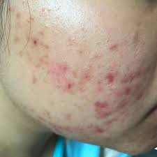
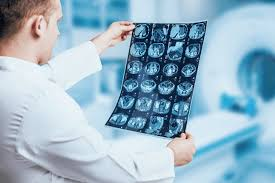
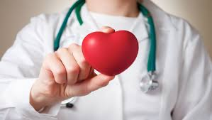

<-- HOME
ORTHOPAEDICS DEPARTMENT
Excellence in patient care, research, and education is the overall goal of the Department of Orthopaedics at Life Long.
The Department of Orthopaedics Surgery provides a comprehensive and integrated orthopaedic program for patients , students, residents, and fellows.
In addition to general Orthopaedics, the department has a facility which specializes in the field of joint replacement, sports medicine, hand surgery, musculoskeletal oncology, pediatric orthopaedics, spine surgery and treatment of complex trauma.The recent innovations in orthopaedic surgery such as minmally invasive joint replacement, surface replacement arthoplasty, revision hip and knee replacements, minimally invasive spine surgery, vascularised grafting for non unions, limb reimplantations, arthroscopic PCL and shoulder surgery are all being practiced with excellent results.
There is also a bone bank facility in the deptt where both live donor bone and cadaveric bone are preserved and used as and when required.
ICMR and CSIR funded research projects in the field of orthopaedics are also being carried out.
The Institute also has modern Physiotherapy Unit which works is close co-ordination with the Orthopaedic Department for comprehensive care of patients
SKIN DEPARTMENT

Dermatology is the branch of medicine dealing with the skin. It is a speciality with both medical and surgical aspects. A dermatologist is a specialist doctor who manages diseases related to skin, hair and nails and some cosmetic problems
The Division of Dermatology at Life Long is known for its commitment towards providing a full range of dermatologic care for both common and rare problems of skin, hair, nails, and mucous membranes, and also provides for sexually transmitted diseases and HIV. The division follows international protocols for providing quality services at accessble prices, and the safety of the patient is the topmost priority for the doctors.
The department was set up in 2009 under the chairmanship of prof K C Kandhari,and subsequentaly iconic personalities like Prof Lk Bhutani
Prof KC Kandhani and Prof LK Bhutani laid the basic foundation of the department and started Dermotolgy training module which is still being laid followed with modifications as per changing requirements. The department has grown up in its size sice then adn has contributed remarkably to the Dermatology specially. The department has introduced many new innovative treatment methods like Dexametasone cyclophoshpamide pulse therapy and oral mini pulse and investigative procedures for allergic skin disease.
PLASTIC SURGERY DEPARTMENT

The Department of plastic , Reconstructive and Burns Surgery was established in July 2015. Although in its nascent stage, it is already making its presence known-not just nationally but in the international arena also.
The Department works in collaboration with various other departments such as neurosurgery, cardiac surgery, orthopaedic surgery etc.The endeavor of this young and enthusiastic team of surgeons is to reduce the morbidity and provide functionality by reconstructive and microsurgical procedures thereby providing an improved quality of life to the patients.
In caters to almost all emergency hand injuries, microvascular reconstructive for complex limb trauma, post burn reconstruction, maxillofacial trauma, oncoplastic reconstruction, aesthetic breast surgery, oncoplastic beast reconstruction and other congenital anomalies like cleft lip, cleft palate, syndactly, polydactyly, camptodactyly, hypoplastic thumb deformity, etc
The teamwork in collaboration with orthopaedic surgery to run the Hand Clinic, with the department of orthopaedic to run the cleft Clinic , with the department of Dermatology to run the aesthetic clinic, with the department of neurosurgery to run the brachial plexus injury clinic and the amputation clinic along with PMR.
RADIOLOGY DEPARTMENT

Our radiology service is led by highly qualified radiologists with dedicated fellowship training from world-leading medical centers. The multidisciplinary team includes radiologists and radiographers,and nursing, physics, administartion and support staff.
We are actively involved in ongoing clinical research and training to ensure the bed possible service is of provided to all who access our service. The introduction of new technologies and equipment is always done with a patient focus very much to the fore.
We provide a GP service for :
- General X-rays
- Skull and maxillofacial X-rays
- Fluoroscopy-barium imaging
- Mammography
- Ultrasound
- Chests
CARDIOLOGY DEPARTMENT


The Department of Cardiology at Life Long was established under the leadership of Prof. Sujoy B. Roy. The department has developed excellent facilities for clinical care and has fully developed facilities for adult and pediatric interventions including coronary infections, valvuloplasty, device closure of congenital shunts and electrophysiology services (including radiofrequency ablation, pacemaker, bi-ventricular pacemaker and cardioverter defibrillator implantation). Laboratory testing facilities include trademill testing, holter recording, echocardiography (including transthoracic, transesophegeal. 3-D and fetal echocardiography). Tilt testing for syncope and electrophysiology testing including CARTO system mapping. The department has done pioneering in the field of rheumatic fever and rheumatic heart disease including juvenile mitral stenosis, coronary artery disease including angioplastic, arrhythmias, cardiomyopathies and congenital heart diseases.
Following are the names of the names of the Heads of Cardiology Department since inception:
- Prof. Sujoy B Roy
- Prof. Madan Lal Bhatia
- Prof Najir Hussain
- Prof Ranjana Saxena
EMERGENCY DEPARTMENT
The Emergency Department assesses and treats people with serious injuries and those in need of emergency treatment. It's open 24 hours a day, 365 days of the year.
The Emergency Department is sometimes referred to as casuality , accident and emergency or A&E. If an ambulance is needed you can call 108, the emergency phone number in India.
Generally you should go to the emergency department only in emergencies such as loss of consciousness, a very serious state of confusion, persistent serve chest pain or breathing difficulties .
Emergency ambulances , fire engines and police vehicles are now the only vehicles permitted to use the access road into the emergency department which is situated opposite in eye unit.
All other vehicles that requires access to the emergency department, including cars, taxis and patient transport, are to use the drop-off bays outside of the North Wing entrance of the Hospital- this should be access via the main site entrance from gurudev road.